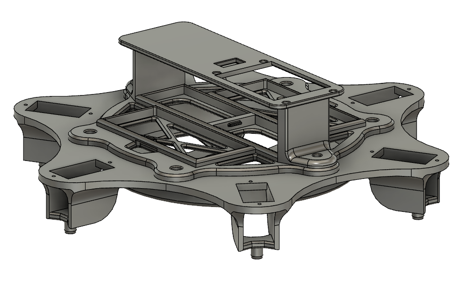
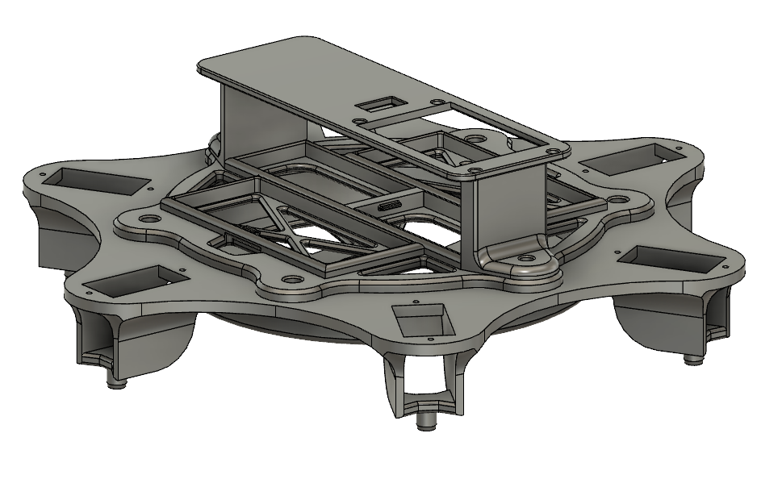

Mechanical Spider Robot
At the beginning of the year a watched a video online featuring a robotic spider. Straght away I wanted to create something similar of my own.

This project was going to require a large set of skills, a lot of I didn't have at the time. Such as 3D modeling, 3D printing, electrical wiring, soldering and programming. The project can be broken down into three categories or stages. The first being the design and prototyping phase, the second being electrical wiring, and finnally the programming coding phase. The programming phase ended up being the most difficuilt as controlling and coordinating the movement of 18 servo motors in a smooth fashion to animate a robot spider is more difficuilt than initially suspected.
I decided apon constructing a six legged hexapod instead of a full eight legged spider to reduce cost as complexity. In each of the six legs there are three TG9z 9 gram hobby servos to control the three joints bringing the total servo motor count to 18. The two joints closest to the body act as a hip joint with deflection allowed in both horizontal and vertical planes. The joint furthest from the body acts as a knee only allowing deflection in a vertical plane. Finally I designed a body which each leg attaches to as well as housing all of the other electrical components.
 

The design dimenensions were based roughly off of an image of a spider as well as a midfulness of maintaing the range of motion of joints while I was designing. Fusion 360 was used to model the different components and used my 3D printer print all of the components.